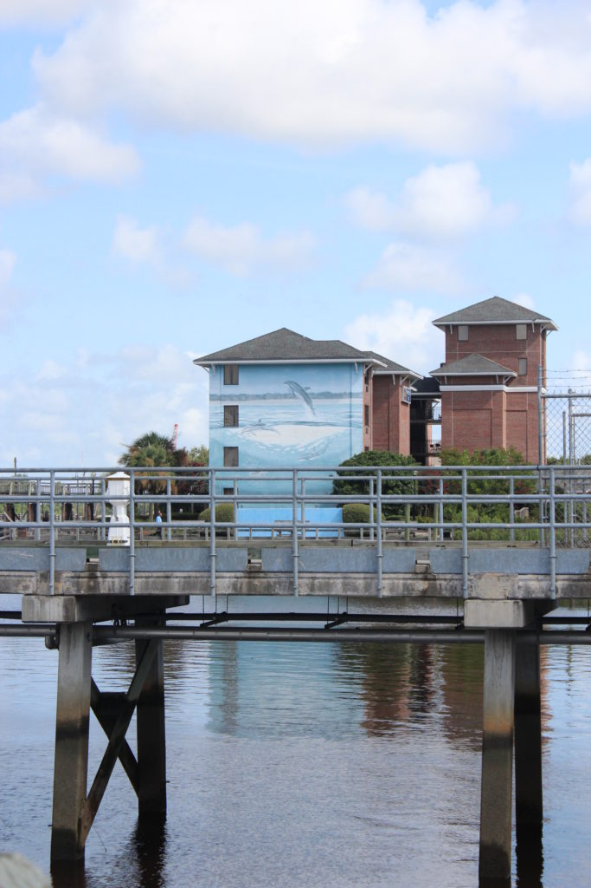
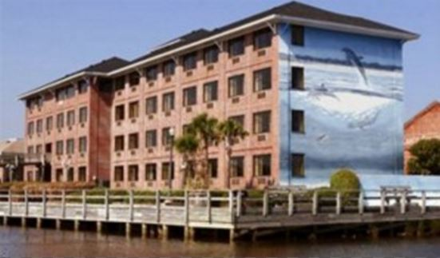

.png)
.PNG)
.PNG)
.PNG)
.PNG)
.PNG)
.JPG)
.JPG)
.PNG)
.PNG)


Welcome back for the next part of last summer’s road trip through parts of North Carolina! In the previous post, we were traveling from Hendersonville and heading towards Wilmington. My husband and our daughter had both visited there a few times on summer mission trips, but I had never been to Wilmington before. (They kept tellimg me that I was going to love it. 🙂 )
We stayed the night in the Best Western Coastline hotel. I chose it because of its location…overlooking the river with easy access to the walkable Riverfront.

This was the view from our hotel room window. 🙂
(See what I mean about location?)

The hotel is located right next to the Wilmington Railroad Museum.
(Our daughter was still in “Disney mode” on this trip!)

The Riverwalk entrance wasn’t far from our hotel’s entrance, so the next day we spent a good portion of that day enjoying that area of Wilmington. Built in the 1980’s, the wooden boardwalk is about a mile long and runs alongside the Cape Fear River.

You can see the Battleship North Carolina across the river from there as well. We did not squeeze in a tour of it on this trip, but I am sure my husband would have especially loved it. We will have to make time for it on a return visit.

The USS Diligence was also docked there.

The Riverwalk is lit at night by those nostalgically designed lights there. This allows many people to get out and enjoy the area in the evening as well.

You stroll past homes, apartments, restaurants, and shops all along the river – some housed in historic warehouses.

There were sooo many cute shops in the Riverwalk district!

I loved the landscaping outside The George, one of the restaurants there.
 Here’s a little peek inside:
Here’s a little peek inside:

But we did not dine at The George. Instead we made reservations at Elijah’s, the dark building you see in the next photo.
 It was very “old nautical” in its decor
It was very “old nautical” in its decor
(which I loved. 🙂 )
 It reminded me of some of the nautical decor at Disney World.
It reminded me of some of the nautical decor at Disney World.
(Only this was the real-deal! 🙂 )


You can see a couple of our lunches.
(That’s my Black and Bleu Salad.)

After our meal we continued exploring the Riverwalk – especially the residential end.

 At some point, we wandered up a block away from the Cape Fear River and started walking back on that street towards our hotel. The old homes there were simply beautiful!
At some point, we wandered up a block away from the Cape Fear River and started walking back on that street towards our hotel. The old homes there were simply beautiful!


The entire street seemed to have one gorgeous old home after another!

This historic area was really charming. We then came to a section of shops and restaurants housed in old brick buildings.

Ice cream anyone?
(Yes, of course! 🙂 )

The brickwork in this area of Wilmington was really beautiful!


And that brings us to the end of our time in Wilmington. We had spent that August day walking the Riverfront, so we grabbed a cold drink from back at our hotel and then hit the road again. We were leaving North Carolina for our next stop…
Charleston, South Carolina.
🙂
 Hope you to see you back here for all the details on it soon!
Hope you to see you back here for all the details on it soon!
Until next time…


.PNG)
Enjoyed your view of Wilmington! Our experience there was long ago when our children were very young and we were staying on the beach! It was hurricane season and the rain came down in buckets!! I was so scared because I didn’t know how slowly hurricanes travel and I just insisted we pack up and get back to the hills of Ky!! The couple of days on the beach was nice but breezy and the traveling inland with all the rain was terrible. So needless to say — I enjoyed your photo visit much more than mine! Thank you as always for letting your readers follow along. 😊
——————————————————————–
That does NOT sound like a very fun trip to the beach! I hate driving in the rain, so it would have been very stressful to me too. Glad you enjoyed the post. Perhaps you should fit in another trip to Wilmington to give it another chance – on days with sunny weather! 🙂
Kelly
I agree with Gwen! I haven’t been to North Carolina in years. I would love to put on my bucket list!
———————————————————————
Definitely worth a trip from anywhere!!
Thanks for stopping by the blog Cindy. Hope you have a great weekend!
Kelly
Thanks for sharing this Kelly …. sounds like you all had a wonderful trip. I really hope that I get to visit North Carlolina (and South!) one day. I just love mountains! Having just returned from one of our regular trips to Switzerland I’m really missing them! There’s nothing like a sunny day on a snowy mountain!
Take care and have a good week! I’m really enjoying yours and Gabbies Instagram Accounts … she’s growing so quickly 🙂
Rosemary
———————————————————————
Thanks for reading the post Rosemary! I too hope you get to visit the South one day. (But nothing will compare to the Swiss Alps I’m afraid. 🙁 )
And thank you for following us along on Instagram. Gabbie is growing unbelievably fast! She is all legs right now. 🙂
Kelly
Looks amazing. I’ve honestly never thought of going there. Might have to re think that!!! I’m actually traveling to Charleston next week!! My youngest son is attending the PGA management program at Coastal Carolina University. We are leaving the grey skies and freezing temps here in Boston to explore and hopefully find some sun with him. Not to rush you but if you could post your Charleston post before St. Patrick’s Day it would be appreciated!! 😉 Would love a sneak peek before I check it out in person!!
———————————————————————
There is a cold front moving into the South and it is supposed to be chilly next week, but it will still be warmer than Boston. 🙂 The hotel we stayed in while we were in Charleston is up on the blog today. Our sightseeing and part of our dining will be up either Sunday or Tuesday…just depends on if I want to get a decorating post in on one of those days. Hope the posts will help you. There will also be another post on the huge garden we toured but I don’t think it will be out before the 17th. Sorry.
Hope you have a great time in South Carolina!
Kelly
All of your travel posts are fantastic. I think it is fun to read about places I know because you make me want to go back. Charleston is one of my favorite places so can’t wait to see what you found there.
———————————————————————
Thank you DiAnne. I’m so glad you enjoy the travel posts. Charleston is a great city…such beauty, history, and soooo many good places to eat!
Kelly
Hi Kelly, what a lovely city Willmington is! The shops and homes look so inviting. Your salad looks so delicious! Look forward to your tour of Charleston. See you soon, T
What a beautiful place to visit! I always love your photos and descriptions. Makes me want to go back. Ha, all your travel posts make me want to visit the locations. 😉 There’s nothing like the old historical areas of cities. They are my favorite. How fabulous would it be to tour some of those homes? 😀 Looking forward to our…um, your next stop since we’ll be visiting in the fall for our niece’s wedding. Not sure how much sightseeing I’ll get in considering our daughter will be busy with matron of honor duties and we’ll be helping with 3 month old twins! 😀
Kelly, thanks for the great post and the walk down memory lane! Years ago, my husband and I toured the Battleship North Carolina (he was in the navy, so…battleship, frigate, destroyer, sub…I’ve been on them all 😉). In fact, our two puppies were to be spayed while they boarded at the vet’s, and I called to check on them from that pier. Ha ha! Look forward to the next part of your trip…my favorite vacation ever was in Charleston. Have a blessed day!
Another fun place! It is about an hour from Oak Island where my parents, siblings, and their/our children vacation every summer. (And, I think Katrina’s brother owns one of those fabulous old homes in Wilmington.) Kelly, you would also like Southport which is not far from Wilmington. I love seeing these old towns through your eyes. Don’t you just LOVE historic towns brought back to life! You do such an awesome job photographing them! I am so excited about seeing your trip to Charleston. It is another one of my happy places!
———————————————————————–
I wish we had had time for Southport. It sounds like a place I would have loved, so it is now on my list of places-we-have-to-go! (Along with nearby Bald Head Island.) Historic towns are so fun to tour because we love architecture. The houses are always so beautiful!
Kelly
Kelly, these character homes are so stunning! It makes me crave for a much warmer climate than I am experiencing currently! Have you seen the movie “Walt before Mickey”?
Maybe your daughter has, it’s quite good.
——————————————————————
You just can’t beat the architectural details in historical homes, can you? I hope the warm weather comes your way soon Anita. Time for spring! No, I have not seen that movie, but I just looked it up based on your recommendation. Looks like a good one we will have to check out! Thanks for letting us know about it!
Kelly
I have a photo on my hutch of my dad and I on the Battleship NC! I was three years old! I have been looking for a little spring excursion for my husband and I and I think you may have just planned it for us. Was your hotel quiet at night? Bed comfortable?
———————————————————————
How neat is that Nancy? Love it! Yes to both of your question. It was exceptionally quiet, and the mattresses are Tempurpedic …so they were quite comfortable.
Kelly
I love love love these travel posts! I am from Alberta, Canada. My husband and I would like to travel through North Carolina some day and these posts will be a big help in our planning. Sometimes it can be overwhelming to plan a holiday but posts like this help to narrow things down! Thank you so much!!
——————————————————————
Thank you Brenda! So glad the posts are of help to you!
Have a lovely weekend. 🙂
Kelly
It’s fun to see the other coast’s ‘must see’ travel spots. The food, shops and sites are always so inviting. Thanks, Kelly.
xo,
Karen
I love all your posts!!!! Hope you and your family are doing well. Very windy today in the upper Midwest-western Lake Michigan area. We are headed out, later today, for Phoenix-too bad it’s not a tailwind, would get there faster!!!! Enjoy the day!
Good morning Kelly,
Really enjoyed seeing your NC posts. I’ve been to Asheville & Biltmore but we headed to I-40 & home after that. I’d really love to visit where you’ve been. Just lovely.
Asheville was the last leg of our trip through Georgia that year. We drove through LA, MS,AL to Georgia. We started our Georgia tour (my dream trip)in LaGrange,Callaway Gardens,Macon & The Antebellum Trail.
The street in Wilmington with brick buildings & all the beautiful homes really reminded me of Madison GA. One of my all time favorite towns.
We’re experiencing a very early Spring here in S.E. OK. I bet it’s beautiful down in Georgia now. It was mid-priced when we were there & it was absolutely gorgeous. All the dogwoods & azaleas were in their glory.
I’m praying we don’t get a late freeze!
——————————————————————-
You made a wonderful trip through Georgia! I love Madison too! Hope to do one of their candlelight Christmas tours one year. Everything is blooming right now! Our azaleas are the snow variety, and they are a little later in blooming than all the pink ones, but everywhere we look the pink ones are fully budded out! And our dogwoods have tons of flowers on them as well. Next week is predicted to be cold again, but I don’t believe we will quite hit the frost temperature. I knew winter wasn’t totally gone yet! 🙂
Have a great weekend Lisa!
Kelly
Kelly this was an absolutely great post! You should be working for the Wilmington chamber of commerce 🙂 I am putting NC on the top of my travel list. Looks wonderful! Thanks Kelly.
——————————————————————
Thank you Gwen! Too funny about working for the chamber of commerce! LOL 🙂
Kelly